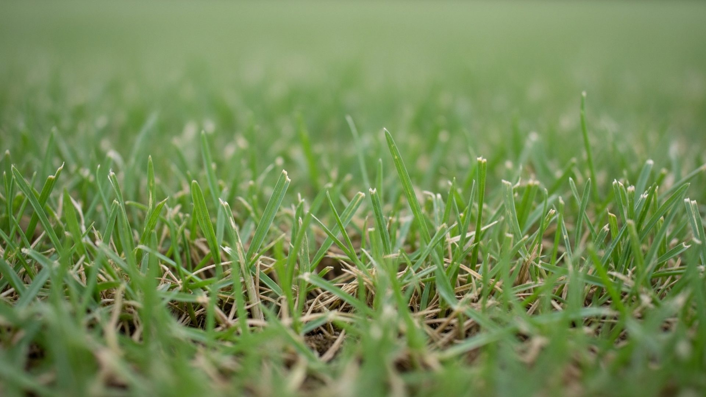
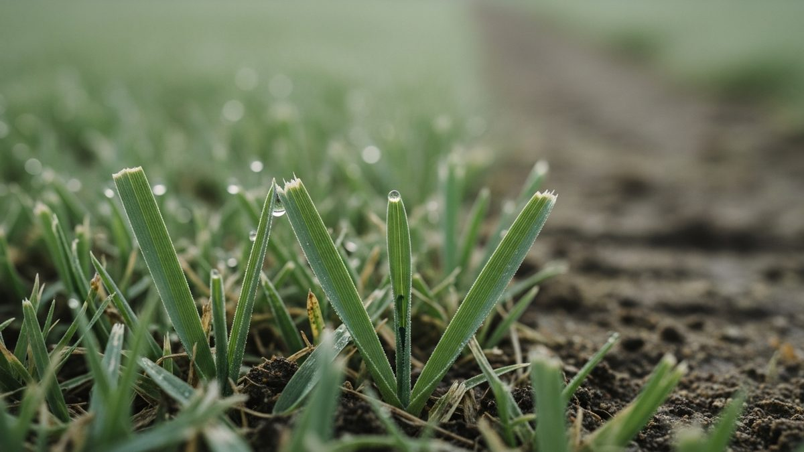

Miller Family Agronomy
lawncare-snellville-ga-us-01-github
A practical reference for working professionals.
Mastering lawn mowing techniques is crucial for maintaining a healthy, resilient turf. This guide delves into the science behind optimal mowing practices, covering everything from blade height calibration and seasonal frequencies to patterns and disease prevention, ensuring your lawn thrives.

Why does mowing height directly impact turf resilience and root development?
The height at which you mow your lawn significantly influences its resilience and the depth of its root system. Taller grass blades provide more surface area for photosynthesis, which fuels stronger root growth. Conversely, cutting grass too short, often referred to as scalping, stresses the plant, weakens its root structure, and makes it more susceptible to drought, weeds like Digitaria sanguinalis, and diseases such as Brown patch. Maintaining an appropriate mowing height, specific to grass types like Cynodon dytahilo or Zoysia matrella, is fundamental for long-term turf health.
How do I calibrate blade height for specific grass varieties like Zoysia matrella or Cynodon dytahilo?
Calibrating your mower's blade height for specific grass varieties is essential. For warm-season grasses like Cynodon dytahilo (Bermuda grass) and Zoysia matrella, a slightly higher cut is often beneficial during peak growing seasons, typically between 1 to 2 inches. Cooler-season grasses like Poa pratensis (Kentucky bluegrass) or Lolium perenne (Perennial Ryegrass) can often tolerate shorter cuts, around 0.5 to 1.5 inches, but still benefit from not being cut too low. Always consult recommended mowing heights for your specific grass species and region. For instance, Stenotaphrum secundatum (St. Augustine grass) generally prefers a higher cut than most other common turfgrasses.
What seasonal mowing frequency prevents stress during Georgia's humid summers?
During Georgia's humid summers, adjusting mowing frequency is key to preventing turf stress. As grass growth accelerates in warm, moist conditions, you may need to mow more often, potentially every 4-5 days. However, the most critical factor is the “one-third rule” – never remove more than one-third of the grass blade height in a single mowing. This prevents shock and allows the grass to recover quickly. Overgrown grass can also increase the risk of fungal diseases like Brown patch and contribute to excessive thatch buildup, especially with species like Poa annua.
Which mowing patterns minimize soil compaction and promote even growth?
Varying your mowing pattern is vital for minimizing soil compaction and ensuring even grass growth. Instead of mowing in the same direction every time, alternate your mowing direction each time—try north-south one week, east-west the next, and then diagonal patterns. This prevents the mower wheels from creating permanent ruts, which can lead to compaction and hinder water and nutrient penetration to the roots. Even, consistent growth is also promoted by ensuring your mower’s deck is level and that blades are sharp. This practice indirectly supports good soil physics.
How does improper mowing contribute to Brown patch disease outbreaks?
Improper mowing practices can significantly contribute to Brown patch outbreaks, a common fungal disease affecting turfgrass. Mowing too low stresses the grass, making it more vulnerable. Additionally, leaving grass clippings on the lawn when the grass is wet can create a favorable environment for fungal growth. Dull mower blades tear grass, creating wounds that are entry points for pathogens. Ensuring proper mowing height, avoiding mowing wet grass, and maintaining sharp blades on your rotary mower are crucial preventative measures against diseases like Brown patch.

When should mowing schedules align with agricultural irrigation cycles?
Mowing schedules should ideally align with agricultural irrigation cycles and natural rainfall patterns to support turf health. If your lawn receives supplemental irrigation, mowing shortly after watering allows the grass to recover quickly from the stress of mowing. It also helps distribute any applied fertilizers or treatments evenly across the turf. For grasses like Paspalum distichum, understanding its water needs and how they interact with mowing is important. Similarly, if relying on natural rainfall, mowing when the ground is moist but not saturated (to avoid compaction) is best.
What role does thatch management play in post-mowing turf recovery?
Effective thatch management plays a critical role in post-mowing turf recovery. Thatch is a layer of dead and living organic matter that accumulates between the grass blades and the soil surface. Excessive thatch can impede water, air, and nutrient movement to the soil and roots, and harbor pests and diseases. Regular aeration and scarification, often performed after the main growing season or during specific recovery periods, break down thatch, improving soil structure and aiding the grass's ability to bounce back after mowing. This is particularly relevant for lawns experiencing plants nitrogen deficiency.
How does blade sharpness affect plants nitrogen deficiency symptoms?
Dull mower blades tear grass rather than cutting it cleanly, which can exacerbate visible symptoms of plants nitrogen deficiency and other nutrient issues. Tearing stresses the plant, making it less efficient at absorbing nutrients from the soil. The ragged edges left by dull blades can also lose moisture faster and appear yellow or brown, mimicking or worsening nutrient deficiency signs. Using a sharp blade on your rotary mower ensures a clean cut, minimizing stress and allowing the grass to better utilize available nutrients, thus masking or preventing deficiency symptoms.
Why does mowing height influence Digitaria sanguinalis (crabgrass) competition?
Mowing height has a direct impact on a lawn's ability to compete against weeds like Digitaria sanguinalis (crabgrass). When you mow at a higher setting, the taller grass blades create a dense canopy that shades the soil surface. This reduced light penetration inhibits crabgrass seeds from germinating and establishing. Conversely, mowing too short allows more sunlight to reach the soil, creating an ideal environment for crabgrass and other annual weeds to thrive and outcompete desirable turfgrasses like Poa annua.
What post-mowing steps support soil physics and subsoil health?
Supporting soil physics and subsoil health after mowing involves ensuring good soil aeration and proper hydration. If the soil becomes compacted from frequent mowing, consider aeration to relieve this. Ensuring that water can penetrate the soil effectively, especially if you are dealing with heavy clay soils or significant thatch, is also important. For lawns that have undergone significant mowing stress or are showing signs of nutrient deficiency, applying appropriate soil amendments or fertilizers can help improve soil structure and support root development below the surface.
How do rotary mower settings differ for Stenotaphrum secundatum versus Poa pratensis?
Rotary mower settings, primarily blade height, must differ significantly for Stenotaphrum secundatum (St. Augustine grass) and Poa pratensis (Kentucky bluegrass). St. Augustine grass is a warm-season grass that thrives at higher mowing heights, typically 2 to 4 inches, to maintain density and color. Kentucky bluegrass, a cool-season grass, prefers a shorter cut, generally between 1 to 3 inches, with many gardeners opting for 1.5 to 2.5 inches during the heat of summer. Mowing either grass outside its optimal range can lead to stress, disease, and weed invasion.
When is scarification necessary after consistent mowing routines?
Scarification, also known as dethatching, becomes necessary after consistent mowing routines when a significant layer of thatch has accumulated. This typically occurs in mature lawns, especially those dominated by vigorous grass types that produce a lot of organic matter. If you notice that your lawn feels spongy, water doesn't penetrate well, or disease is becoming an issue, it's a sign that scarification is needed. This process, often done in conjunction with aeration, helps remove matted organic material, allowing air, water, and nutrients to reach the soil effectively and improving the turf's overall health and recovery capabilities.
What safety protocols align with pesticide regulation in the United States during mowing?
Safety protocols when mowing in the United States, especially concerning pesticides, are stringent and guided by EPA regulations. Always read and follow label instructions for any pesticide applied. Avoid mowing immediately after application unless the label specifically permits it. Ensure that your mower is in good working order, with guards in place, and wear appropriate personal protective equipment (PPE) such as safety glasses, long pants, and closed-toe shoes. When operating a rotary mower or using a string trimmer, be aware of your surroundings to prevent accidental contact with treated areas or bystanders. Proper use of an edger also requires attention to safety, ensuring no debris is thrown.
How do string trimmer and edger techniques complement main mower passes?
String trimmer and edger techniques are essential for achieving a professionally manicured lawn by complementing the main mower passes. While a mower handles large open areas, trimmers and edgers address borders, obstacles, and tight spaces where the mower cannot reach. Edgers create clean, sharp lines along walkways, driveways, and garden beds, enhancing the lawn's overall appearance. String trimmers remove excess grass along fences, walls, and around trees, preventing them from being scalped by a mower or encroaching on garden beds. Proper technique with these tools prevents damage to surrounding plants and structures.
Internal Links:
- Essential Lawn Care Principles
- Identifying Common Lawn Diseases
- Improving Your Soil Health